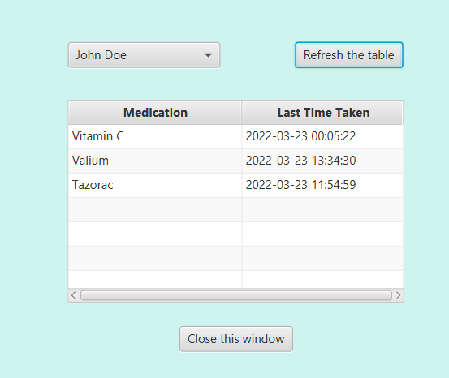

This feature is related with the history of medication took by the patient, it's good for caregivers to know if the patient took everything at what times etc. The caregiver will know if the patient missed a medication time so he will react more faster to help the old people.
Historic (Caregiver point of view)
For a better security, every caregivers will have the option to see the historic of every elders by typing his name on the appropriate field